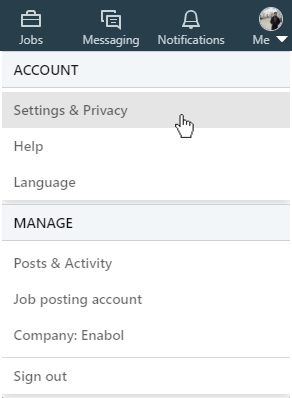
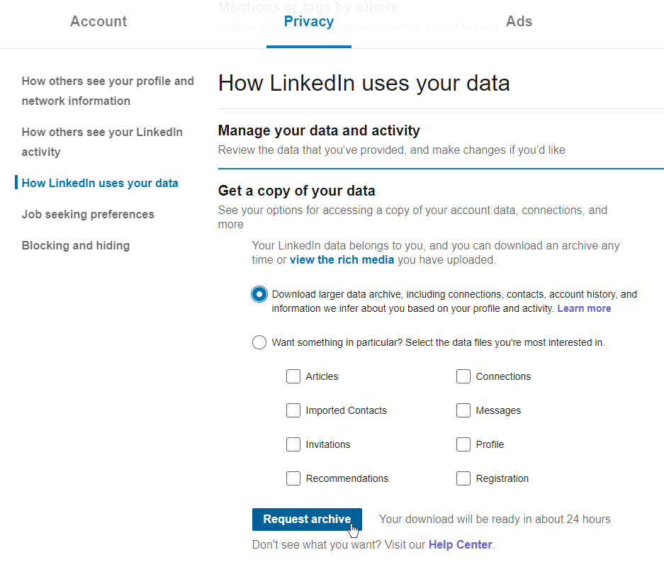

Obtaining a list of your skills, and much more from LinkedIn, is very easy and can be done in just a simple few clicks.
Log in to your LinkedIn account on a desktop.
From the navigation bar at the top, click on Me under your profile picture, and then click on Settings & Privacy.

Under the Privacy section, click on How LinkedIn uses your data.
Expand the Get a copy of your data by clicking on it, and then select the option Download larger data archive, including connections, contacts, account history, and information we infer about you based on your profile and activity.

Click the Request archive button.
Once you receive an email from LinkedIn notifying you that your data is ready- follow the link and download the .zip folder.
Unzip the file to obtain the list of your Skills, as well as additional data from your LinkedIn profile.